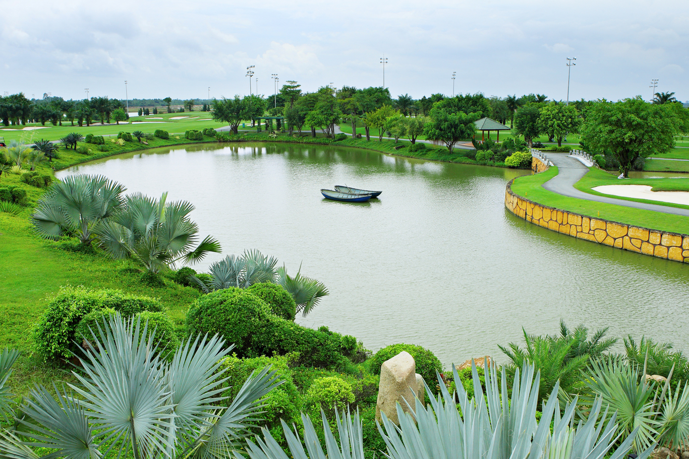
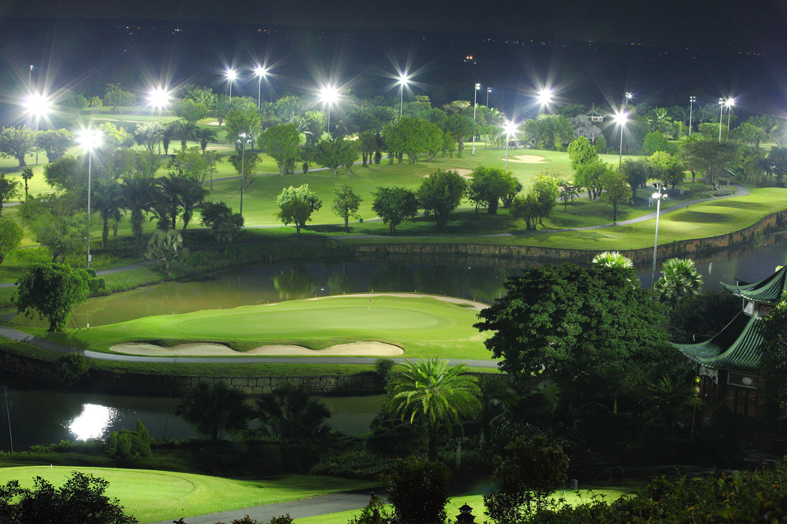
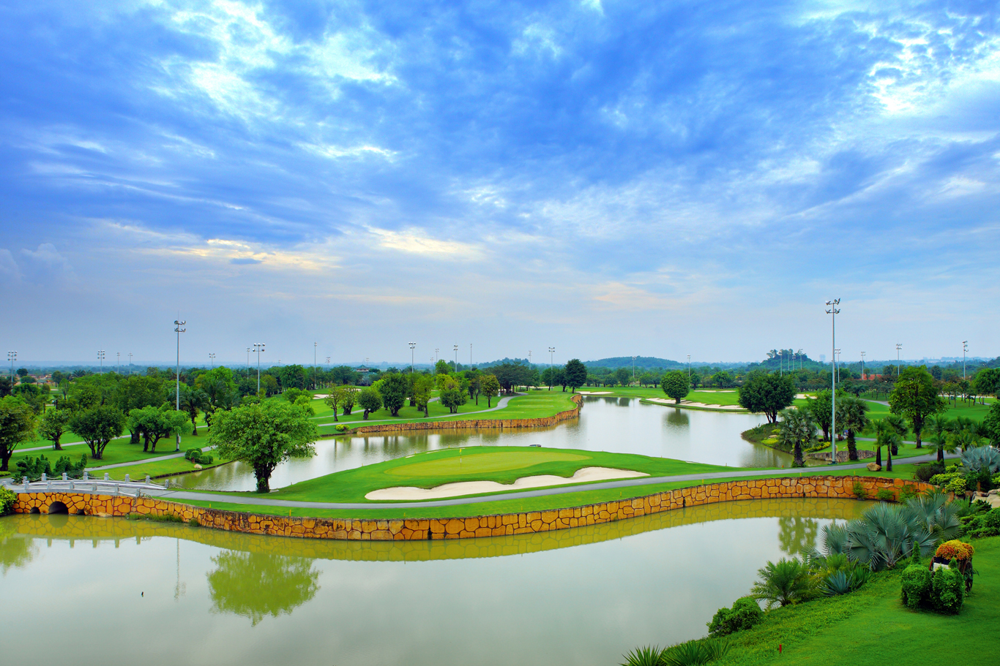

롱탄CC는 베트남 남부에서 가장 인기 있는 프리미엄 골프장 중 하나로, 호치민 시내에서 약 50분 정도의 뛰어난 접근성과 완성도 높은 코스 설계로 한국 골퍼분들에게 꾸준히 사랑받고 있는 대표 골프장입니다. 풍부한 자연경관과 함께 넓고 시원한 코스가 펼쳐져 있어 ‘베트남 남부 최고의 골프장’이라는 평가를 받을 만큼 높은 만족도를 자랑합니다.

롱탄CC는 Hill Course와 Lake Course 두 가지 스타일의 코스로 구성되어 있으며, 각 코스는 풍경과 난이도가 다르게 설계되어 있어 반복 방문해도 지루하지 않은 플레이를 즐길 수 있습니다. 언덕 지형과 워터 해저드가 전략적으로 배치되어 있어 샷의 정확성이 중요한 골프장입니다.
코스 페어웨이는 잘 정돈되어 있으며, 그린의 속도는 비교적 빠른 편으로 중·상급자 골퍼분들에게 더욱 흥미로운 도전 요소를 제공합니다. 초보자도 충분히 라운드 가능하지만, 홀 별 공략법을 미리 확인하면 훨씬 안정적인 스코어 관리가 가능합니다.
롱탄CC는 호치민 중심지에서 차량으로 약 50~70분 거리에 위치해 있으며, 접근성이 매우 좋아 여행 일정 중 부담 없이 다녀올 수 있는 골프장입니다. 공항 또는 호텔 픽업 서비스를 함께 이용하시면 더욱 편리하게 이동할 수 있습니다.
코스 주변은 자연림으로 둘러싸여 있어 도심의 소음 없이 고요하고 편안한 분위기 속에서 라운딩을 즐기기 좋습니다. 특히 아침 시간대에는 안개가 어우러진 숲속 풍경이 매우 인상적입니다.
롱탄CC의 클럽하우스는 고급스럽고 넓은 구조로 되어 있으며, 락커룸, 사우나, 프로샵, 레스토랑 등 다양한 편의시설을 제공합니다. 시설 전반이 깔끔하고 관리가 잘 되어 있어 한국 골퍼분들 사이에서 만족도가 높습니다.
레스토랑에서는 한국식 메뉴, 베트남 음식, 간단한 스낵 등 다양한 식사를 제공하여 라운딩 전후로 편하게 이용할 수 있습니다. 캐디 서비스 또한 롱탄CC의 큰 장점 중 하나로, 그린 라인과 공략 방향을 정확하게 안내해 주어 플레이에 큰 도움이 됩니다.

롱탄CC는 ‘호치민 근교 골프장 추천’, ‘베트남 골프 여행’, ‘가성비 좋은 호치민 골프장’ 키워드에서 항상 상위권에 언급되는 인기 코스입니다. 풍경, 난이도, 서비스, 접근성을 모두 갖춘 균형 잡힌 골프장으로 골퍼 유형에 관계없이 만족도가 매우 높습니다.
베트남 골프 여행을 계획 중이시라면 롱탄CC는 반드시 고려해야 할 코스입니다. 라운딩 예약, 픽업 차량, 그린피 문의는 아래 예약 버튼 또는 카카오톡으로 편하게 문의해 주세요. 한국 골퍼분들이 만족할 수 있도록 최적의 일정으로 안내 도와드리겠습니다.
